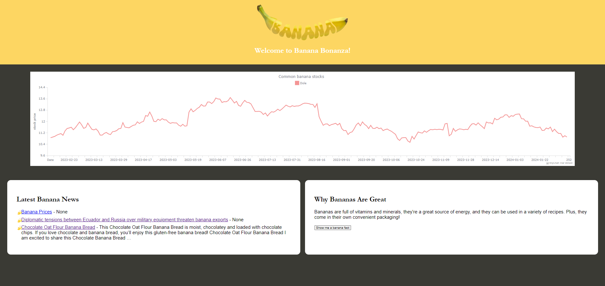

Projects
Wage/Budget Tracker
- Connects to google calendar and tracks work hours.
- Creates predicted income based on hours worked.
- Sheet-Style input for expenses.
- Tracks Spending habits.

Geography Quiz
- JavaFx framework.
- Saves scores to a file.

Banana Tracker
- Scrapes Google News for Banana News using a BeautifulSoup Python Framework.
- Tracks statistics for bananas such as stock prices for popular banana companies.
- Provides fun daily banana facts.